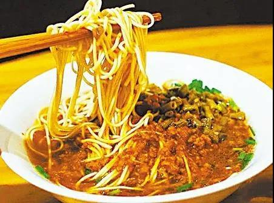
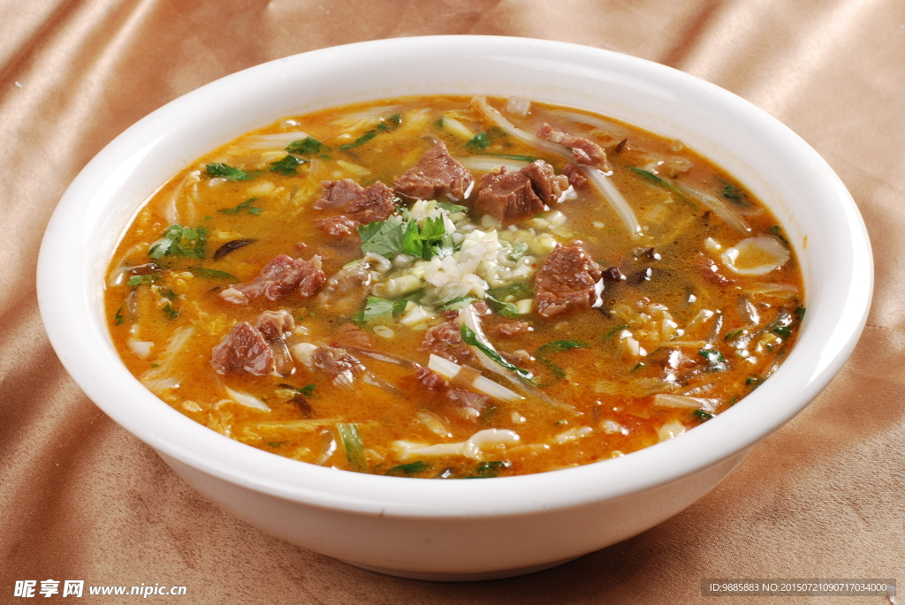
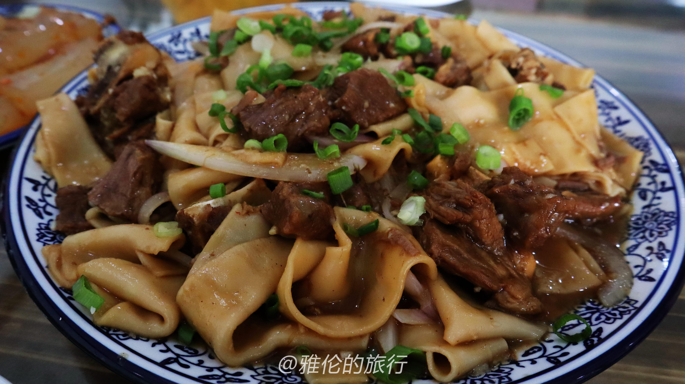
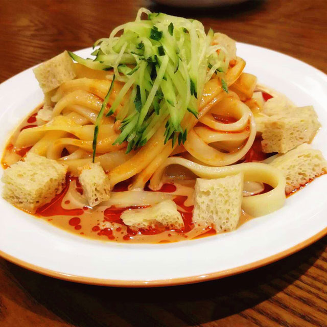
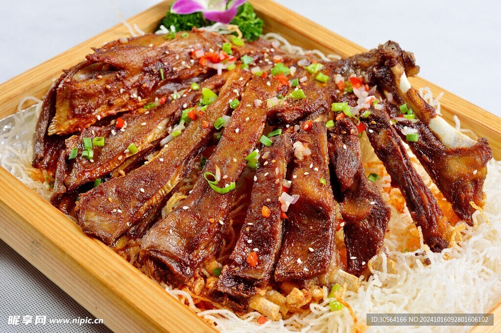
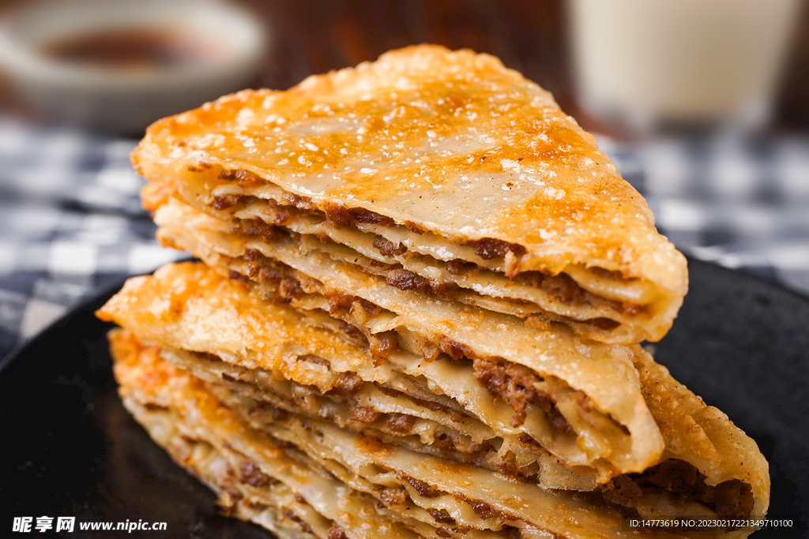
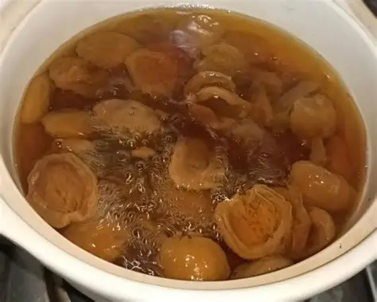
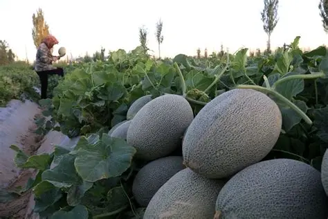
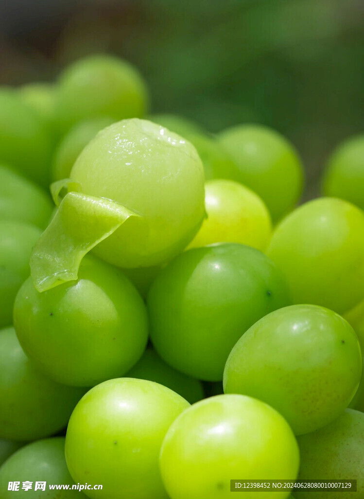
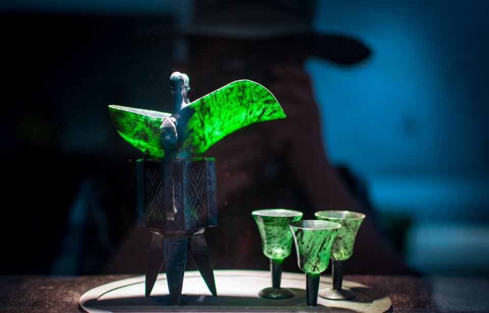

驴肉黄面
敦煌头号名吃。黄面用蓬灰水和面，拉成细丝，筋道弹牙；驴肉切丁加香菇、木耳炒成臊子浇在上面。「天上龙肉，地上驴肉」说的就是它。
FLAVORS OF DUNHUANG
一碗黄面，一杯杏皮水，就是这座城最日常的味道
敦煌・沙洲夜市
敦煌的饮食是丝路的产物。
面从中原来，羊从草原来，杏与瓜从绿洲来。
PART ONE
坐在店里，趁热吃。

敦煌头号名吃。黄面用蓬灰水和面，拉成细丝，筋道弹牙；驴肉切丁加香菇、木耳炒成臊子浇在上面。「天上龙肉，地上驴肉」说的就是它。

敦煌人的早餐。羊骨熬汤，下粉条、羊肉片，撒胡椒和香菜，配一个馍掰着吃。清早一碗，抵一上午的风。

羊肉炖到软烂，饼撕成大块铺在肉上焖，饼吸饱汤汁。一份够两三人分。

面皮蒸制后切条，浇醋、辣油、蒜水，酸辣爽口。夏天在夜市边走边吃最合适。

敦煌的羊肉几乎没有膻味，清水煮就够香。烤羊排按斤计，趁热吃。

戈壁沙葱切碎拌牛肉做馅，饼皮酥脆带焦香，是本地人从小吃到大的小吃。
PART TWO
能装进行李箱的敦煌。

用敦煌李广杏干熬煮，酸甜带杏香，冰镇最好喝。瓶装可带上车，杏干轻便耐放，是最合适的伴手礼。
现制饮品约 5–10 元；杏干约 30–60 元 / 斤

昼夜温差大、日照长，糖分攒得足，七八月最甜。整只不好带，可以让摊主切好装盒。
七八月上市，按斤计价

阳关一带的葡萄，颗粒紧实、甜度高，八九月份上市。葡萄干也值得买。
八九月份上市，葡萄干常年有售

「葡萄美酒夜光杯」的那只杯。祁连玉雕成，薄如纸、对着光呈墨绿色，倒酒后在暗处有微光。价位从百元到上千不等，按工艺和玉料分。
买处：正规工艺品店，注意索要证书
飞天书签、藻井图案丝巾、壁画临摹画、骆驼摆件。研究院文创店的东西最正，夜市摊位的更便宜。
研究院文创店 / 沙洲夜市